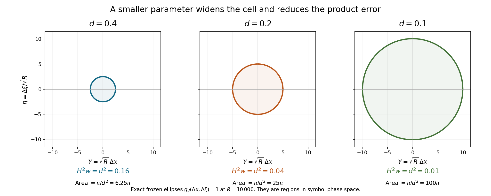

From frozen quadratics to a local estimate
A quadratic limit describes an operator on a fixed profile. A local estimate has to work for every profile, including profiles that change with frequency. Compactness bridges this first difference. A phase-space partition then compares the frozen quadratic operators with the actual operator. The partition must be wide enough for the comparison error to become small, but narrow enough to preserve the Taylor approximation.
We use the strong packet expansion in Concentrated packets and necessary quadratic models. The covering and partition theorems are in Localizing symbols when the measuring scale moves. The full product with two compatible metrics is in Two measuring scales, one Weyl product. Its Hilbert-valued version, including columns with values in \(\ell^2\), and its operator norm bound are in When a moving symbol scale controls an operator. We verify the metrics, weights, domains and remainder sizes used here. Scalar sharp Gårding is in Positivity through a moving family of scalar probes.
Basic references are Lerner's phase-space chapter [L], Nonnenmacher's semiclassical lectures [N], and Hörmander's work on double characteristics [H]. We use Weyl quantization, \(D=-i\partial\), and \(\{a,b\}=\partial_\xi a\cdot\partial_xb-\partial_xa\cdot\partial_\xi b\). Sobolev norms are denoted by \(\|\cdot\|_s\).
1. The models and the estimate we want
Let \(P\) be a properly supported classical scalar operator of order one on an open coordinate domain. At high frequency its Weyl symbol is \[ p=p_1+c_0+S^{-1},\qquad c_0=p^{\mathrm{sub}}_0. \tag{1.1} \] Assume, for a fixed finite \(\gamma\geq0\), \[ \operatorname{Re}p_1\geq0,\qquad |\operatorname{Im}p_1|\leq\gamma\operatorname{Re}p_1. \tag{1.2} \] For every compact base set, suppose all finite moving limits \[ Q(y,\eta)=\lim_{\nu\to\infty} p_1(x_\nu+y/\sqrt{R_\nu}, R_\nu\theta_\nu+\sqrt{R_\nu}\eta), \quad R_\nu\to\infty, \quad x_\nu\to x_0,\quad \theta_\nu\to\theta_0,\quad|\theta_\nu|=1, \tag{1.3} \] obey one common bound \[ \|\psi\|_0\leq M_K \|(Q^w+c_0(x_0,\theta_0))\psi\|_0, \qquad \psi\in C_c^\infty(\mathbb R^n),\quad x_0\in K. \tag{1.4} \] The limits may have linear and constant terms. The packet lesson proves that they are quadratic polynomials, and identifies their quadratic parts.
Define properly supported order-zero operators \(A_j,B_j\) with principal symbols \[ a_j=\partial_{\xi_j}p_1,\qquad b_j=|\xi|^{-1}\partial_{x_j}p_1. \tag{1.5} \] Extend these symbols smoothly through low frequency. Different lower terms change the estimates only by the lower Sobolev errors below. Put \[ V_s(u)=\sum_{j=1}^n \bigl(\|A_ju\|_{s+1/2}+\|B_ju\|_{s+1/2}\bigr). \tag{1.6} \]
Theorem 1.1. Under (1.1)–(1.4), for every compact \(K\) and every real \(s\), \[ \|u\|_s+V_s(u) \leq C_{K,s}\bigl(\|Pu\|_s+\|u\|_{s-1}\bigr), \qquad u\in C_c^\infty(K). \tag{1.7} \] Consequently, for every distribution and every real \(s\), \[ Pu\in H^s\text{ at }\rho \quad\Longrightarrow\quad u\in H^s\text{ at }\rho. \tag{1.8} \] The conclusion has the same Sobolev index as the datum. For an order-one operator that is a loss of one derivative relative to elliptic regularity.
The main intermediate estimate retains an arbitrarily small derivative term.
Proposition 1.2. For every compact \(K\) there is \(C_K\), independent of \(\eta\), such that for every \(\eta>0\), \[ \|u\|_0 \leq C_K\|Pu\|_0 +\eta\bigl(\|u\|_0+V_0(u)\bigr) +C_{K,\eta}\|u\|_{-1/2}, \qquad u\in C_c^\infty(K). \tag{1.9} \] We prove this proposition before using positivity to absorb its derivative term.
2. Changing profiles require one more moment
For an integer \(r\geq0\), let \(\mathcal B_r\) have norm \[ \|v\|_{\mathcal B_r}^2 =\sum_{|\alpha|+|\beta|\leq r} \|y^\beta D^\alpha v\|_0^2. \tag{2.1} \]
Lemma 2.1. A bounded sequence in \(\mathcal B_3\) has a subsequence converging strongly in \(\mathcal B_2\).
Proof. First a bounded set in \(\mathcal B_1\) is precompact in \(L^2\). Its mass outside a ball of radius \(L\) is at most \(L^{-2}\||y|v\|_0^2\). Inside the ball, multiply by a fixed smooth cutoff. The resulting functions have bounded \(H^1\) norm and common compact support, so Rellich compactness applies. One direct verification of that last assertion uses Fourier truncation: the high-frequency tail is bounded by \(T^{-2}\|Dv\|_0^2\), and the operator obtained by a compact base cutoff and a bounded frequency cutoff has a square-integrable kernel. It is compact by finite-rank approximation of that kernel. First choose \(L,T\), then a finite net for the truncated images.
For each word \(Z=y^\beta D^\alpha\) of degree at most two, the functions \(Zv_\nu\) are bounded in \(\mathcal B_1\). Commuting one \(D_j\) past powers of \(y\) gives only words of lower degree, so every required norm is bounded by \(\|v_\nu\|_{\mathcal B_3}\). There are finitely many such \(Z\). A diagonal subsequence makes all \(Zv_\nu\) converge strongly in \(L^2\). Distributional convergence identifies their limits with \(Zv\), where \(v\) is the limit of the identity word. This is convergence in (2.1) with \(r=2\). Weak convergence of the finitely many third words also puts \(v\) in \(\mathcal B_3\). ∎
At \(\rho=(x,\xi)\), write \(R=|\xi|\), and define the scaled quadratic Taylor polynomial \[ F_\rho(y,\eta)= \sum_{|\alpha|+|\beta|\leq2} \frac{\partial_\xi^\alpha\partial_x^\beta p_1(x,\xi)} {\alpha!\beta!} R^{(|\alpha|-|\beta|)/2}y^\beta\eta^\alpha +c_0(x,\xi). \tag{2.2} \] Its quadratic coefficients are bounded uniformly over a compact base set and large \(R\).
Lemma 2.2 (uniform freezing). Under (1.4), for every compact \(K\) there is a bounded function \(\varepsilon_K(R)\to0\) as \(R\to\infty\) such that \[ \|\psi\|_0^2 \leq (M_K^2+1)\|F_\rho^w\psi\|_0^2 +\varepsilon_K(R)\|\psi\|_{\mathcal B_3}^2, \qquad x\in K,\quad \psi\in C_c^\infty. \tag{2.3} \] A slightly larger compact set can be used for \(M_K\) whenever centers approach the boundary of \(K\).
Proof. The gradient estimate for a nonnegative smooth function, applied on a larger compact cosphere, gives \[ R|\partial_\xi p_1(x,\xi)|^2+ R^{-1}|\partial_xp_1(x,\xi)|^2 \leq C_K\operatorname{Re}p_1(x,\xi). \tag{2.4} \] For the complex symbol, apply the real gradient estimate to \(\operatorname{Re}p_1\) and to the two nonnegative functions \(\gamma\operatorname{Re}p_1\pm\operatorname{Im}p_1\). If \(\gamma=0\), the imaginary part is zero. Homogeneity supplies the radial derivative too; the normalized symbol is bounded on the compact cosphere. This proves (2.4).
Fix a positive number \(e\). Suppose (2.3), with \(e\) in place of \(\varepsilon_K(R)\), fails at arbitrarily large \(R\). Choose such a sequence and normalize its profiles so that \[ 1>(M_K^2+1)\|F_{\rho_\nu}^w\psi_\nu\|_0^2 +e\|\psi_\nu\|_{\mathcal B_3}^2, \qquad \|\psi_\nu\|_0=1. \tag{2.5} \] The profiles are bounded in \(\mathcal B_3\), and Lemma 2.1 makes a subsequence converge strongly in \(\mathcal B_2\) to \(\psi\), with \(\|\psi\|_0=1\).
Set \(r_\nu=\operatorname{Re}p_1(\rho_\nu)\). By (2.4) the linear coefficients of \(F_{\rho_\nu}\) are \(O(\sqrt{r_\nu})\). Its quadratic coefficients and \(c_0(\rho_\nu)\) are bounded. Thus \[ \|F_{\rho_\nu}^w\psi_\nu\|_0 \geq |p_1(\rho_\nu)| -C_e\sqrt{r_\nu}-C_e. \tag{2.6} \] If \(r_\nu\) were unbounded, the right side would tend to infinity on a subsequence, contradicting (2.5). Hence the constant coefficients are bounded too, by the sector inequality.
After further subsequences, \(x_\nu,\theta_\nu\) and every Taylor coefficient converge. The packet expansion identifies the limiting polynomial with \(Q+c_0(x_0,\theta_0)\) for a limit (1.3). Strong \(\mathcal B_2\) convergence gives convergence of the applied quadratic differential operators. The model bound (1.4) extends from compact smooth functions to \(\mathcal B_2\): cut off a weighted Sobolev function in larger balls and then mollify; each word through degree two converges in \(L^2\), by the product rule and dominated convergence. Passing to the limit in (2.5) would give \[ 1\leq M_K^2\|(Q^w+c_0)\psi\|_0^2 \leq \frac{M_K^2}{M_K^2+1}<1. \] This contradiction proves a frequency threshold for every \(e>0\).
Take \(e=1/j\), choose increasing thresholds, and let \(\varepsilon_K\) be the corresponding decreasing step function. At the remaining bounded frequencies set it at least one; the identity word in (2.1) then makes (2.3) automatic. This gives the claimed bounded vanishing error. ∎
In left quantization, the same frozen operator is the ordinary ordered Taylor polynomial plus the first lower left symbol at the center. The Weyl constant for each mixed monomial combines with that lower symbol to give exactly \(c_0\), by the subprincipal conversion formula in the packet lesson.
For later use translate and modulate back to physical coordinates. Equation (2.3) is equivalent to \[ \|v\|_0^2\leq(M_K^2+1)\|T_\rho^wv\|_0^2 +\varepsilon_K(R) \sum_{|\alpha|+|\beta|\leq3} R^{|\beta|-|\alpha|} \|(x-x_\rho)^\beta(D-\xi_\rho)^\alpha v\|_0^2, \tag{2.7} \] where \[ T_\rho(X)= \sum_{|\alpha|+|\beta|\leq2} \frac{\partial_\xi^\alpha\partial_x^\beta p_1(\rho)} {\alpha!\beta!} (x-x_\rho)^\beta(\xi-\xi_\rho)^\alpha+c_0(\rho). \tag{2.8} \] The change of variables is unitary. Multiplication by \(x-x_\rho\) contributes \(R^{-1/2}y\), while \(D-\xi_\rho\) contributes \(R^{1/2}D_y\). Thus the squared moment weight is \(R^{|\beta|-|\alpha|}\), the inverse of the differential word's squared dilation factor. Equation (2.7) also holds for Schwartz \(v\) by weighted approximation.
3. A cell metric and its smaller cross parameter
Let \(0<d\leq1\), and put \[ \Lambda=\langle\xi\rangle,\qquad w=d^{-2}+\Lambda,\qquad a=d^2w=1+d^2\Lambda. \tag{3.1} \] Use two metrics: \[ g_0=|dx|^2+w^{-2}|d\xi|^2,\qquad g_d=a|dx|^2+\frac{d^4}{a}|d\xi|^2=a g_0. \tag{3.2} \] Their symplectic duals and small parameters are \[ g_0^\sigma=w^2|dx|^2+|d\xi|^2,\qquad g_d^\sigma=\frac{w}{d^2}|dx|^2+ \frac1{d^2w}|d\xi|^2, \tag{3.3} \] \[ h_{g_d}=d^2,\qquad H(g_0,g_d)=\frac{d^2}{\sqrt a}. \tag{3.4} \] In particular \[ H^2w=d^2. \tag{3.5} \] This last cancellation controls a product between an order-one symbol measured by \(g_0\) and a cell cutoff measured by \(g_d\).
Here are all the metric checks. The function \(w\) is Lipschitz in \(\xi\), with constant one, and \(w\geq d^{-2}\). A small \(g_0\)-displacement changes \(w\) by at most a fixed small multiple of \(w\). A small \(g_d\)-displacement has \[ |\xi-\eta|\leq r\sqrt w/d,\qquad |w(\xi)-w(\eta)|/w(\xi)\leq r/(d\sqrt w)\leq r. \tag{3.6} \] Thus both metrics and every fixed power of \(w\) have uniform local comparisons.
For global comparisons set \(D=g_{d,Y}^\sigma(X-Y)\). If \(w(X)\geq w(Y)\), Lipschitz continuity gives \[ w(X)/w(Y)\leq1+d\,D^{1/2}/\sqrt{w(Y)} \leq1+D^{1/2}. \] If \(w(Y)>w(X)\), put \(r=w(Y)/w(X)\). Then \[ D\geq\frac{w(X)}{d^2}\frac{(r-1)^2}{r} \geq\frac{(r-1)^2}{r}, \] which bounds \(r\) by a fixed multiple of \(1+D\). The same estimates hold with \(X,Y\) reversed. Since \(g_0^\sigma\geq g_d^\sigma\), these polynomial comparisons prove individual temperateness, both cross transport tests, and the cross weight tests for every power of \(w\). The mean metric is uniformly equivalent to \(g_d\). All constants just used are independent of \(d\).
The dual calculation in (3.3) gives \(g_d=d^4g_d^\sigma\) and the two equal cross ratios \(d^4/a\), proving (3.4). Both uncertainty inequalities hold. The full two-metric product therefore applies with this exact \(H\), and the Hilbert-coefficient norm theorem applies to \(g_d\), uniformly in \(d\).
On the region \(\Lambda\geq Ld^{-2}\), for a fixed sufficiently large \(L\), the cell widths are \[ |\Delta x|\lesssim a^{-1/2},\qquad |\Delta\xi|\lesssim\sqrt a/d^2. \tag{3.7} \] The relative frequency variation is small there. Also \(w\asymp\Lambda\), so ordinary order-one symbols have uniformly bounded \(S(w,g_0)\) seminorms after a cutoff to this region. Low-frequency cutoffs at any fixed threshold depending on \(d\) contribute only constants depending on \(d\) times \(\|u\|_{-1/2}\).

Figure 1. The frozen one-pair ellipses \(g_d(\Delta x,\Delta\xi)=1\), in coordinates \(Y=\sqrt R\,\Delta x\), \(\eta=\Delta\xi/\sqrt R\), at \(R=10\,000\). Their exact semiaxes are \(\sqrt R/\sqrt{1+d^2\sqrt{1+R^2}}\) and \(\sqrt{1+d^2\sqrt{1+R^2}}/(d^2\sqrt R)\), so their area is \(\pi/d^2\). They describe symbol cells. The actual partition can use a smaller fixed metric radius. Equations (3.2)–(3.5) prove the geometry and the product-error value \(H^2w=d^2\); equations (4.3)–(4.4) show the corresponding increase in weighted moments. Lerner [L] gives the metric-calculus background. Reproducible figure source.
4. Sum the frozen estimates as a Hilbert-valued column
Fix \(K\) and larger compact neighborhoods. Proper input and output cutoffs replace \(P\) by a coordinate operator with a base-compact symbol agreeing with (1.1) on the relevant larger neighborhood. On inputs supported in \(K\), its \(L^2\) norm is bounded by \(C\|Pu\|_0+C\|u\|_{-1/2}\). The off-diagonal kernel differences are smoothing. The principal cutoff can be nonnegative, so the sector condition is preserved.
The metric covering theorem gives cells centered at \(\rho_j=(x_j,\xi_j)\), bounded overlap, and cutoffs with uniform \(g_d\)-derivatives. Choose the fixed cell radius smaller than the distance between the compact neighborhoods. From a partition \(\sum\phi_j=1\), form \[ \theta_j=\frac{\phi_j}{(\sum_k\phi_k^2)^{1/2}}, \qquad \sum_j\theta_j^2=1. \tag{4.1} \] Bounded overlap makes the denominator bounded away from zero; its reciprocal and every derivative have uniform bounds. Thus \(\theta=(\theta_j)_j\) is an \(S(1,g_d;\ell^2)\) column. Write \(\Theta_j=\theta_j^w\).
For the scalar square of each real cutoff the first Weyl correction is zero. The coefficient product and norm theorems give \[ \sum_j\|\Theta_ju\|_0^2 =\|u\|_0^2+O(d^4)\|u\|_0^2. \tag{4.2} \] The assertion is an operator identity for the column and its adjoint; bounded overlap of symbol supports alone would not justify it.
Centers outside the larger base neighborhood can be discarded at a cost \(Cd^2\|u\|_0\). Indeed their cutoffs and a fixed input cutoff equal to one on \(K\) have disjoint supports, so every local product term vanishes. The two-metric first remainder has weight \(H\leq d^2\). Its column norm is bounded by the Hilbert-coefficient theorem. Centers in that neighborhood below any specified finite frequency threshold form a finite set and have smoothing kernels; their cost is \(C_d\|u\|_{-1/2}\).
For the remaining large-frequency centers put \(R_j=|\xi_j|\), \(T_j=T_{\rho_j}\), and apply (2.7) to \(\Theta_ju\). Its weighted moments have a simple uniform bound. On the support of \(\theta_j\), \[ \sqrt{R_j}|x-x_j|+R_j^{-1/2}|\xi-\xi_j| \leq C d^{-1}. \tag{4.3} \] Multiplication or differentiation of the Weyl kernel adds only first derivatives of \(\theta_j\). The corresponding scaled derivatives have size \(O(d)\), and therefore also \(O(d^{-1})\). Repeating this finite identity at most three times shows that the column symbols for all scaled words of degree \(k\leq3\) are bounded in \(S(Cd^{-k},g_d;\ell^2)\). The norm theorem consequently gives \[ \sum_j\sum_{|\alpha|+|\beta|\leq3} R_j^{|\beta|-|\alpha|} \|(x-x_j)^\beta(D-\xi_j)^\alpha\Theta_ju\|_0^2 \leq Cd^{-6}\|u\|_0^2. \tag{4.4} \] Choose the retained frequency threshold so that \(\sup_j\varepsilon_K(R_j)\leq c d^8\). Lemma 2.2 permits this, with no assumed rate for its vanishing error. Equations (2.7), (4.2)–(4.4) then give \[ \|u\|_0 \leq C\bigl\|(T_j^w\Theta_ju)_j\bigr\|_{L^2(\ell^2)} +Cd\|u\|_0+C_d\|u\|_{-1/2}. \tag{4.5} \] The first constant depends on the model bound, the fixed neighborhoods and their covering constants, but not on \(d\).
5. Compare the frozen column with the original operator
We supply the error calculation used in (4.5). On a retained cell the ordinary derivative bounds and (3.7) give \[ T_j-p\in S(C_d w^{-1/2},g_d) \quad\text{on that cell, with all finite seminorms.} \tag{5.1} \] For the principal symbol this is Taylor's third-order remainder. A \(g_d\)-unit derivative of order \(k\) has principal-symbol size at most \[ C_k d^{-k}\Lambda^{1-k/2}. \tag{5.2} \] For \(k\geq3\) this is bounded by \(C_kd^{-3}\Lambda^{-1/2}\) on the retained region. The integral Taylor remainder gives the same weight for \(k=0,1,2\). The difference between \(c_0\) and its frozen constant is \(O(d^{-1}\Lambda^{-1/2})\); the \(S^{-1}\) symbol is smaller. These facts prove (5.1). Enlarged cutoffs within uniformly comparable cells give the same estimates for the assembled column.
Because \(T_j\) is a quadratic polynomial, applying it to the Weyl kernel of \(\Theta_j\) gives the exact finite product through degree two. This is a differential kernel identity and does not presume that an unbounded polynomial belongs to an arbitrary metric symbol class. In contrast, the product \(\theta_j\#p\) is the proved two-metric product. Its remainder after degree one has weight \(H^2w=d^2\). Comparing the two gives \[ T_j\#\theta_j =\theta_j\#p+\frac1i\{p_1,\theta_j\}+r_j+s_j, \tag{5.3} \] where the columns obey \[ r\in S(Cd^2,g_d;\ell^2),\qquad s\in S(C_d w^{-1/2},g_d;\ell^2). \tag{5.4} \] To check every term, the zeroth difference is (5.1) times \(\theta_j\). The first difference is \((2i)^{-1}\{T_j+p,\theta_j\}\), whose leading part is the bracket in (5.3); its remaining parts have the weight in (5.1). The finite second correction has two derivatives of \(T_j\), of size \(Cd^{-2}\) in the cell metric, and the symplectic factor \(h_{g_d}^2=d^4\); it is \(O(d^2)\). The two-metric second remainder supplies the other part of \(r_j\). Thus no remainder of size \(d^4w\) is used.
All these equalities first act on Schwartz functions. The Hilbert-coefficient Schwartz action and composition theorem identifies their column operators; its norm theorem then extends the bounded columns to \(L^2\). A symbol in \(S(C_d w^{-1/2},g_d;\ell^2)\) maps \(H^{-1/2}\) to \(L^2(\ell^2)\): compose with the Fourier multiplier \(\Lambda^{1/2}\), apply the product theorem, and use \(w^{-1/2}\Lambda^{1/2}\leq1\). The needed weight constants may depend on \(d\), which is permitted for this lower-order error. Hence (5.4) has norm bounds \[ \|r^wu\|_{L^2(\ell^2)}\leq Cd^2\|u\|_0,\qquad \|s^wu\|_{L^2(\ell^2)}\leq C_d\|u\|_{-1/2}. \tag{5.5} \]
The bracket column is controlled by the derivative operators in (1.5). In fact \[ \{\!p_1,\theta_j\!\} =\sum_\nu \bigl(a_\nu\partial_{x_\nu}\theta_j -|\xi|b_\nu\partial_{\xi_\nu}\theta_j\bigr). \tag{5.6} \] On the retained cells, \[ \frac{\partial_x\theta}{\Lambda^{1/2}}, \qquad \Lambda^{1/2}\partial_\xi\theta \quad\text{are bounded in }S(Cd,g_d;\ell^2). \tag{5.7} \] For example \(\sqrt a/\sqrt\Lambda\leq Cd\), and \(d^2\sqrt\Lambda/\sqrt a\leq Cd\), there. Factor (5.6) through the symbols of \(\Lambda^{1/2}A_\nu\) and \(\Lambda^{1/2}B_\nu\). The first two-metric remainder has weight \[ H\cdot d\,w^{1/2}=d^2. \tag{5.8} \] Ordinary lower-symbol differences have weight \(C_d\Lambda^{-1/2}\). Therefore \[ \bigl\|(\{p_1,\theta_j\}^wu)_j\bigr\|_{L^2(\ell^2)} \leq Cd\,V_0(u)+Cd^2\|u\|_0+C_d\|u\|_{-1/2}. \tag{5.9} \] Here the fixed derivative of the high-frequency cutoff and all discarded low-frequency operators have already been included in the last term.
Combine (5.3), (5.5), (5.9) with the bounded column \((\Theta_jPu)_j\). Substitute the result into (4.5). We obtain \[ \|u\|_0\leq C\|Pu\|_0 +Cd\bigl(\|u\|_0+V_0(u)\bigr)+C_d\|u\|_{-1/2}. \tag{5.10} \] Choosing \(d\) after the desired \(\eta\) proves Proposition 1.2. Notice that the Taylor threshold is chosen after \(d\); no polynomial rate of convergence for the model error has been claimed.
6. The sector supplies derivative energy
Equation (2.4) says, at high frequency, \[ \Lambda\sum_j(|a_j|^2+|b_j|^2) \leq C_K\operatorname{Re}p_1. \tag{6.1} \] Choose a sufficiently small fixed \(e>0\). The principal symbol of \[ \operatorname{Re}P -e\sum_j\bigl((\Lambda_{1/2}A_j)^*(\Lambda_{1/2}A_j) +(\Lambda_{1/2}B_j)^*(\Lambda_{1/2}B_j)\bigr) \tag{6.2} \] is nonnegative of order one. Here \(\Lambda_{1/2}\) is a proper Sobolev weight; its principal symbol is \(|\xi|^{1/2}\). Sharp Gårding gives a bounded negative error. The ordinary lower symbols in (6.2) have order zero. Thus \[ V_0(u)^2\leq C_K \bigl(\|Pu\|_0\|u\|_0+\|u\|_0^2\bigr). \tag{6.3} \] The finite sum norm in (1.6) and the square sum differ by fixed constants.
In particular \(V_0(u)\leq C(\|Pu\|_0+\|u\|_0)\). Choose \(\eta\) small in (1.9), and absorb its multiple of \(\|u\|_0\). Then \[ \|u\|_0\leq C\|Pu\|_0+C'\|u\|_{-1/2}. \tag{6.4} \] Fourier interpolation gives \(\|u\|_{-1/2}\leq t\|u\|_0+C_t\|u\|_{-1}\) for arbitrary \(t>0\). Choose \(t\) after \(C'\) and absorb again. Substitute the resulting bound in (6.3), using \(\sqrt{ab}\leq(a+b)/2\). We have proved \[ \|u\|_0+V_0(u) \leq C_K\bigl(\|Pu\|_0+\|u\|_{-1}\bigr). \tag{6.5} \]
7. Sobolev shifts and arbitrary distributions
For any \(G\in\Psi^t\), the ordinary composition theorem gives \[ [P,G]=\sum_j(C_jA_j+D_jB_j)+C_0, \qquad C_j,D_j\in\Psi^t,\quad C_0\in\Psi^{t-1}. \tag{7.1} \] Indeed its leading bracket is a sum of the two principal derivatives in (1.5). The frequency derivative of \(G\) compensates for the factor \(|\xi|\) in \(\partial_xp_1\). The first lower symbol of \(P\) and every further product term have the stated remainder order. Bounds are uniform for bounded symbol families of \(G\). Coefficients can be localized to the support of its differentiated symbol, modulo errors of arbitrarily negative order.
Apply (6.5) to \(v=\Lambda_su\). Proper support puts all outputs in one larger compact set. Commuting \(P\) and the order-zero \(A_j,B_j\) past this weight yields \[ \|u\|_s+V_s(u) \leq C_s\left( \|Pu\|_s+ \sum_j(\|A_ju\|_s+\|B_ju\|_s) +\|u\|_{s-1/2}\right). \tag{7.2} \] The commutators with \(A_j,B_j\) have order \(s-1\), so their \(H^{1/2}\) outputs are bounded by the last norm. Interpolate the derivative terms between \(H^{s+1/2}\) and \(H^{s-1/2}\), and then use their order-zero mapping: \[ \sum_j(\|A_ju\|_s+\|B_ju\|_s) \leq t V_s(u)+C_t\|u\|_{s-1/2}. \tag{7.3} \] Finally interpolate \(\|u\|_{s-1/2}\) between \(\|u\|_s\) and \(\|u\|_{s-1}\). Choose these small interpolation coefficients after the constants in (7.2). Absorption proves (1.7), for every real \(s\).
Here is the distributional use, without assuming the target regularity. Choose nested conic cutoffs and a properly supported regularizer with symbol \[ \psi(x,\xi)\chi(h\xi),\qquad 0<h\leq1, \tag{7.4} \] where \(\chi=1\) near zero and has compact support. These are uniformly order zero; each output is smooth with compact output support. Suppose \(Pu,A_ju,B_ju\) are microlocally \(H^t\), and \(u\) is \(H^{t-1}\), in the larger cone. Equation (7.1) for the bounded order-zero regularizers gives a uniform \(H^t\) bound for their images under \(P\). Its remainder has order minus one, so the stated lower regularity of \(u\) is exactly sufficient. Separated microsupport terms are uniformly smoothing to any prescribed order; a compact distribution is in some negative Sobolev space and controls those terms.
Equation (1.7) gives uniform \(H^t\) bounds for the regularized \(u\) and uniform \(H^{t+1/2}\) bounds for its derivative-operator images. Weak Hilbert-space compactness and the distributional limit identify the resulting bounds on the smaller cone. Commutators with the limiting cutoff are smoothing there. Thus this step proves \[ u\in H^t,\qquad A_ju,B_ju\in H^{t+1/2} \quad\text{on the smaller cone}. \tag{7.5} \]
Start with a sufficiently negative \(t_0\leq s\). Since the derivative operators have order zero, \(u,A_ju,B_ju\) initially share that regularity. Apply (7.5) first at \(t_0\). Thereafter apply it at successive increments of at most \(1/2\), ending exactly at \(s\). The prior step supplies the derivative inputs; the known regularity of \(u\) is at least \(t-1\) for the next step. The datum remains \(H^t\) throughout. Finitely many nested cones suffice. This proves (1.8) and Theorem 1.1.
8. Exercises with complete solutions
Exercise 1 — a frozen oscillator with a free pair, 8 points. In the cone near \((\xi_1,\xi_2)=(0,R)\), let \[ p_1(x,\xi)=\frac{\xi_1^2+x_1^2\xi_2^2}{|\xi|},\qquad c_0=-2. \] Compute (2.2) at \(x_1=0,\xi_1=0,\xi_2=R\). What is the best model lower constant?
Solution. The nonzero second derivatives there are \(\partial_{\xi_1}^2p_1=2/R\) and \(\partial_{x_1}^2p_1=2R\). The value and gradient vanish. Hence the frozen operator is \(D_{y_1}^2+y_1^2-2\), with no \(y_2,D_{y_2}\) dependence. Its first-pair eigenvalues are \(2j-1\), \(j\geq0\); the nearest values are \(-1,1\). The best constant is one. Tensoring their normalized eigenfunctions with an arbitrary normalized compact profile in \(y_2\) attains it on the weighted closure of the test domain. Compact cutoffs of these tensors approach the same ratio. The free pair does not alter the bound.
Exercise 2 — why the third moment matters, 8 points. Let \(\phi\in C_c^\infty(\mathbb R)\) have norm one, and put \(v_L(y)=L^{-2}\phi(y-L)\). Show that this sequence is bounded in \(\mathcal B_2\), has no convergent subsequence in that space, and has unbounded \(\mathcal B_3\) norm.
Solution. Derivatives of the translated profile have fixed norms. Multiplication by \(y^b\), \(b\leq2\), costs at most \(C L^b\), so all degree-at-most-two norms are bounded. The \(L^2\) norm tends to zero. But \(\|y^2v_L\|_0\to1\), by writing \(y=L+z\) on the support. Any \(\mathcal B_2\) limit would therefore have to be zero in \(L^2\) while retaining a nonzero second multiplication norm, which is impossible. The third multiplication norm is asymptotic to \(L\). A \(\mathcal B_3\) bound prevents this escaping second-moment defect.
Exercise 3 — two different small parameters, 8 points. Verify (3.4) and compare the second product weights \(h_{g_d}^2w\) and \(H^2w\).
Solution. Dividing the two diagonal coefficients of \(g_d\) by those of \(g_d^\sigma\) gives \(d^4\) in each direction. Dividing \(g_0\) by \(g_d^\sigma\) gives \(d^4/a\) in each direction. Thus \(h_{g_d}=d^2\) and \(H=d^2/\sqrt a\). The one-metric second weight is \(d^4w=d^2a\), which grows without bound as \(|\xi|\to\infty\) at fixed \(d\). The actual cross weight is \(H^2w=d^2\). This is why the two-metric remainder is needed.
Exercise 4 — no effective Taylor threshold, 6 points. Suppose the freezing error is \(\varepsilon(R)=1/\log(2+R)\). Ignoring fixed multiplicative constants, choose a threshold making \(d^{-6}\varepsilon(R)\leq d^2\). Can that threshold be a fixed power of \(d^{-1}\)?
Solution. It suffices that \(\log(2+R)\geq d^{-8}\), or \(R\geq\exp(d^{-8})-2\). A fixed power \(R=d^{-N}\) gives only \(\log(2+R)=O(\log(d^{-1}))\), which is much smaller than \(d^{-8}\). The proof needs existence of a threshold after \(d\) is fixed; it supplies no uniform polynomial rate.
Exercise 5 — two absorptions in the correct order, 8 points. Suppose \[ U\leq AF+\eta(U+V)+B_\eta W,\qquad V^2\leq C(FU+U^2), \] where \(U=\|u\|_0\), \(F=\|Pu\|_0\), and \(W=\|u\|_{-1/2}\). Deduce a bound by \(F+\|u\|_{-1}\).
Solution. The second inequality gives \(V\leq C_1(F+U)\). Choose \(\eta\) so that \(\eta(1+C_1)\leq1/2\). Then \[ U\leq2(A+C_1\eta)F+2B_\eta W. \] Use \(W\leq tU+C_t\|u\|_{-1}\), choosing \(t\) after the now fixed \(B_\eta\), so that \(2B_\eta t\leq1/2\). Absorb this last term. The resulting constant may depend on the selected \(\eta,t\), but is finite. Choosing \(t\) before fixing \(B_\eta\) would not ensure absorption.
References
- [L] Nicolas Lerner, Metrics on the Phase Space, chapter 2 of Metrics on the Phase Space and Non-Selfadjoint Pseudo-Differential Operators. Author-hosted chapter. Metric localization, products and norm estimates.
- [N] Stéphane Nonnenmacher, An Introduction to Semiclassical Analysis, lectures, September–November 2020. Open university-hosted notes. Weyl products and the bounded-symbol method.
- [H] Lars Hörmander, The Analysis of Linear Partial Differential Operators III: Pseudo-Differential Operators, Springer, 2007 reprint. Publisher's bibliographic record. One-derivative-loss estimates for sector-valued double characteristics.
Written by GPT-6.1 Sol (OpenAI), at Ultra reasoning effort, September 2026. Self-checked by the writing AI. Public domain (CC0).
Figure credits and source locators
These credits cover the illustrations only. They do not change the lesson’s proof status.
- parameter-cells — GPT-6.1 Sol (OpenAI), Ultra reasoning effort, September 2026; CC0.
Original exact frozen metric diagram with reproducible Python source. Self-checked by the writing AI.
- Equations (3.2)–(3.5), (4.3)–(4.4), Proposition 1.2 and Exercise 3; Lerner, Metrics on the Phase Space, metric calculus.
- Reproducible source: figures/parameter_cells.py
Figure SHA-256:
E402F8A104E841DE0BB89CEC6959CFA65F45055D14E083E49A620E07A039C6DB